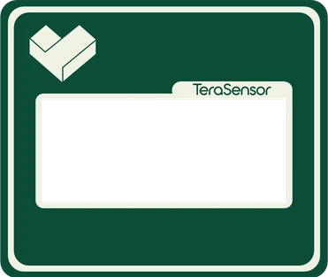

TeraSensor
Decisões técnicas na palma da mão.
Analisador de solo de bolso para produtores e agrônomos. Insira a sonda, leia seis parâmetros na hora e transforme cada leitura num laudo assinável — sem laboratório, sem infraestrutura fixa.

Seis parâmetros,
uma inserção.
Uma única inserção da sonda entrega o retrato químico e físico do solo — direto na tela E-ink.
pH
Acidez do solo — faixa 3.5 a 9.0.
EC · Condutividade
Salinidade efetiva disponível às plantas.
Umidade
Teor de água em % volumétrica.
Temperatura
Temperatura do solo em °C.
Salinidade
Índice salino do substrato.
TDS
Sólidos dissolvidos totais.
Da sonda ao receituário.
Este é o coração da proposta. Toque no botão e veja como uma única leitura de solo vira, cientificamente, uma recomendação de produtos do estoque da loja agropecuária.
A linha tracejada é o alvo. A leitura, muito abaixo, prova a acidez — na tela, na frente do produtor.
Aguardando análise…
A lista de compras aparece aqui.
Tudo na palma
da mão.
Tela E-ink
Leitura nítida mesmo sob luz solar direta, com consumo mínimo de bateria.
50 leituras nomeadas
Salve cada ponto no aparelho — “Setor Norte · Morango” — e compare depois.
Bluetooth + app
Sincronize com um toque e gere gráficos comparativos no celular.
Laudo em PDF
Relatório completo pronto para impressora, e-mail ou WhatsApp.
Linha de valor ideal
Defina o alvo e veja na hora o que está dentro ou fora do padrão.
Calibração rastreável
Aferido com soluções tampão de pH e de condutividade rastreáveis.
O laudo que
fecha a venda.
O aplicativo transforma leituras cruas em um documento técnico que o produtor entende e o agrônomo assina — tudo no celular, ainda no meio da lavoura.
Cada leitura tem nome
Organize os pontos por talhão e por cultura.
Gráficos comparativos
Veja num relance qual setor está fora do padrão.
Linha de valor ideal
Defina o alvo e enxergue o desvio na hora.
Laudo em PDF
Parecer do agrônomo e exportação por WhatsApp.

Toque nos botões — o aparelho responde de verdade
É este o papel
que sai do app.
Um laudo de verdade, gerado pelo TeraSensor numa estufa de teste: as leituras nomeadas, os seis parâmetros em gráfico contra a linha do valor ideal e o parecer técnico com a estimativa de custo do tratamento. Aproxime para ler.
Amostra de demonstração, para leitura na tela. O arquivo em PDF é entregue ao cliente pelo próprio aplicativo.
Calibração
rastreável.
Cada unidade é aferida contra soluções-tampão de referência antes de sair — e você pode recalibrar em campo quando quiser.
Leve o laboratório para o campo.
Fale direto com quem projetou o instrumento.